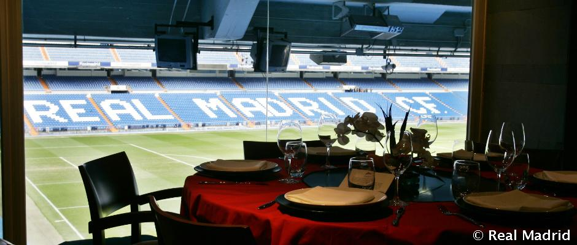

El Real Madrid y Grupo San Pablo han hecho oficial el nacimiento de "UNO By Real Madrid", la cadena de restaurantes con la que pretenden expandir la marca Real Madrid a nivel mundial ofreciendo un innovador concepto de restauración fast-casual.
"UNO By Real Madrid" nace para ser un referente internacional en la restauración fast-casual, donde el principal valor es la calidad del producto.
